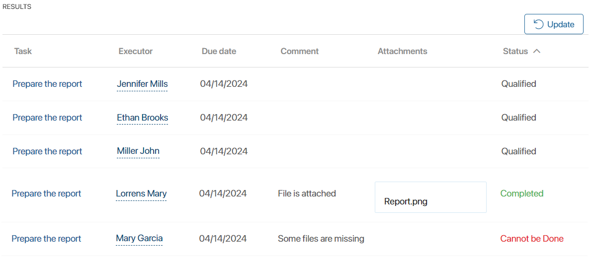
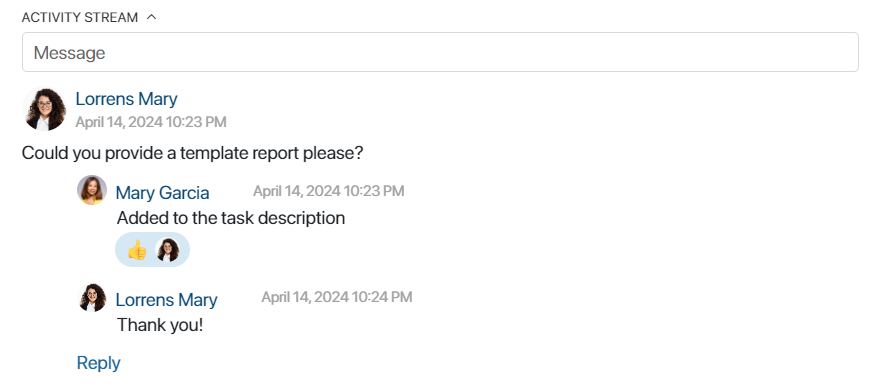
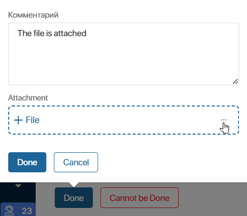

When creating a task, you can specify more than one executor: several users, a group, a department, etc. In this case, a separate task instance is set for each employee, and the author can see the results of work in one window. This is convenient when you need to set a task of the same type for a group of employees, for example, to ask all managers to prepare a report.
Here is what to keep in mind when working with tasks with multiple executors:
- The task author can track the progress of all employees and see the results of each one in the summary table.
- You cannot change the total number of executors, but you can reassign an instance, i.e. replace one executor with any other user.
- The author can change the task details, and the data will be updated on the pages of all executors.
- When the author cancels a task, the execution is interrupted for all employees.
- The task activity stream is common for all instances. The author, approver, executors, and participants of the task can correspond there.
- When working on a task, an employee sees the page of their instance, where only they are specified as the executor.
- When completing a task with multiple executors, an employee can add an attachment.
Track the progress of executors
If a task is assigned to multiple employees, the author can view the execution statuses and results of each of them in the summary table.
To do this, go to Tasks > Assigned by me. The list will display the names of all unfinished task instances. Open any of them. Under the task information, you will see the Results table.
All employees who are working on the task as well as the execution statuses are displayed here. To update the data, click Refresh in the upper right corner of the table.

When an employee completes a task, the table displays their comment and the attached file.
To work with an attachment, hover the cursor over the paperclip icon. You can:
- Download the file to your computer.
- Select a folder from the Files workspace and save a copy of the attachment in it.
- Copy the link to download the file.
- Open the file in preview mode.
The side panel of the page displays the overall status of the task. Thus, until all employees complete the work, the task remains in In progress status. If one of the employees marks a task as cannot be done, the task will acquire the Partially completed status after the work is completed. To learn more about the statuses, refer to Task page.
Once all the employees have completed the task, you can go to the summary table from the Tasks > Assigned by me> All workspace. To do this, click on the crossed-out name of any task instance.
Actions with a task
Users who work on a task can perform certain actions with it: reassign, change the participants list, edit information, etc.
Read more about the available actions in Actions with tasks.
Cancel a task
The author of a task can cancel its execution. To do it, open its page and click Interrupt Process in the lower panel.
Please note, that all instances of the task will be canceled. It is impossible to cancel a task for only one executor.
Task correspondence
A single activity stream is available for the author, approver, executors, and participants of a task. Any of these employees can view all correspondence and reply to messages. All users involved in the task will see notifications about new messages in their #Activity stream.

Work with a task
If you have a task assigned to you with several executors, it will appear in the Tasks > Assisting workspace. Its page looks like a standard task. It does not display the full list of executors. You will see the information necessary for the task: author, deadline, description, priority, and attached files.
The task activity stream is displayed at the bottom of the page. Here you can discuss issues with colleagues or clarify the information with the author. All employees involved in the task, including other executors, will see notifications about new messages and will be able to participate in correspondence.
Complete a task
After completing the task, open the task page and click the Done button on the bottom panel.
For a task with multiple executors, you can attach a file. Only the author of the task will see it in the results table.
To upload a file from your computer, click +File. To select from the Files workspace, click the three dots on the right side of the field.

If for some reason you cannot complete the task, click the Cannot be Done button. In this case, you can also attach a file.
The author of the task will see a new status, as well as your comment and attachment in the results table, and will be able to respond to the situation.
Found a typo? Select it and press Ctrl+Enter to send us feedback